철도신호기사 (2020-08-22 기출문제)
1과목: 전자공학
1. 이미터 팔로워 회로의 일반적인 특성으로 틀린 것은?
- 입력저항이 CB증폭기보다 높다.
- 전류이득이 CB증폭기보다 높다.
- 출력과 입력의 위상은 같다.
- 증폭도가 1 이상이다.
(정답률: 54%)

2. 공통 베이스 접지(CB)의 전류증폭율 α와 공통 이미터 접지(CE)의 전류증폭율 β의 관계식으로 옳은 것은?
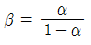
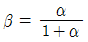
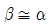
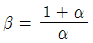
(정답률: 75%)
3. 다음 논리 회로의 출력(Y)은?
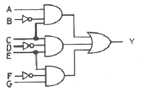
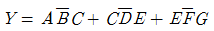
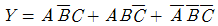
- Y = A + B + C + D + E + F + G
- Y = ABCDEFG
(정답률: 89%)
4. 진폭변조(AM)에서 변조된 높은 주파수의 피변조파는?(단, VC는 반송파의 진폭, m(t)는 변조도,ωs는 변조 신호 각주파수,ωc는 반송파 각주파수이다.)
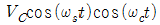
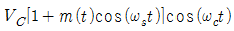
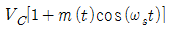
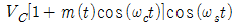
(정답률: 88%)
5. 나이퀴스트 이론에 의하면 최고 5kHz의 전송신호를 가질 때, 최소 몇 배로 샘플링해야 원 신호와 동일하게 구현되는가?
- 1
- 1.5
- 2
- 2.5
(정답률: 75%)
6. 주파수변화에 대한 이득 특성을 보데(bode) 선도로 표현할 때, -20dB/octave의 의미는?
- 주파수가 10배로 증가하는 동안 이득이 20dB로 감소
- 주파수가 6배로 증가하는 동안 이득이 20dB로 감소
- 주파수가 2배로 증가하는 동안 이득이 20dB로 감소
- 주파수가 8배로 증가하는 동안 이득이 20dB로 감소
(정답률: 67%)
7. T Flip Flop의 특성방정식은?(단, Qn은 현재상태,
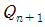
은 다음 상태이다.)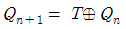
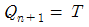
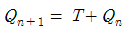
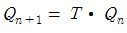
(정답률: 77%)
8. 다이오드 정류회로에서 여러 개의 다이오드를 병렬로 연결해서 사용하는 주된 이유는?
- 다이오드를 과전압으로부터 보호하기 위하여
- 다이오드를 과전류으로부터 보호하기 위하여
- 부하 출력의 맥동률을 감소시키기 위하여
- 입력 전압을 안정화시키기 위하여
(정답률: 85%)
9. 다음 증폭기의 Zin을 밀러정리(Miller theorem)로 표현하면?
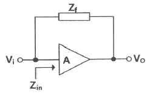
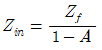
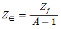
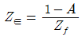
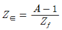
(정답률: 67%)
10. 다음 논리회로의 기능에 해당되는 것은?
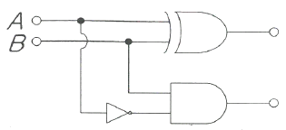
- 플립플롭
- 반가산기
- 반감산기
- 계수기
(정답률: 70%)
11. 다음 중 R-L-C 직렬공진 회로의 선택도(Q)는?(단, ωr 는 공진 각주파수이다.)
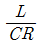
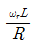
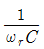
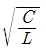
(정답률: 78%)
12. 주파수변조(FM)에서 대역폭이 150kHz이고 변조 주파수가 10kHz일 때 최대 주파수 편이는 몇 kHz 인가?
- 65
- 85
- 130
- 140
(정답률: 60%)
13. 다음 회로에서 출력전압 VO(V)는?(단, R1=R3=1kΩ, R2=R4=5KΩ, V1=4V, V2=3V 이다.
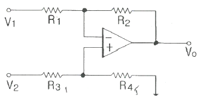
- 1
- -1
- -5
- 5
(정답률: 65%)
14. BJT에 대한 설명으로 틀린 것은?
- 증폭기로 사용할 때 베이스와 이미터사이는 순방향으로 바이어스 한다.
- 증폭기로 사용할 때 베이스와 컬렉터사이는 역방향으로 바이어스 한다.
- 증폭기로 사용할 때 높은 전압의 순서는 베이스, 이미터, 컬렉터이다.
- 트랜지스터의 전극은 이미터, 베이스, 컬렉터이다.
(정답률: 79%)
15. RC 직렬회로에 크기가 Vb인 구형파 전압을 인가했을 때 저항 R 양단의 전압 VR은?
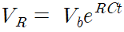
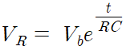
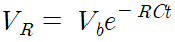
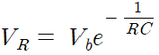
(정답률: 82%)
16. 부울대수에 관한 정리가 성립되지 않는 식은?
- AB = A(A + B)
- A + B = B + A
- A + BC = (A + B)(A + C)
- A(B+C) = AB + AC
(정답률: 91%)
17. 다음 회로에서 V1=3V, Rf=450kΩ, R1=150kΩ일 때 출력전압 VO는 몇 V 인가?
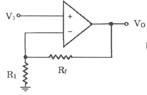
- -12
- 12
- 9
- -9
(정답률: 67%)
18. 다음 회로에서 C1=100pF, C2=10pF이고 L=0.5mH일 때 발진 주파수는 약 몇 kHz인가?
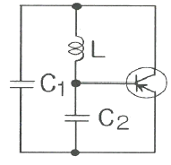
- 295
- 680
- 2360
- 2715
(정답률: 62%)
19. 16진수 (A2F)16을 10진수로 변환하면?
- (1607)10
- (1807)10
- (2207)10
- (2607)10
(정답률: 87%)
20. 2진 상태의 수를 최대 64개 갖는 카운터에서 필요한 최소의 플립플롭 수는?
- 2
- 4
- 6
- 8
(정답률: 78%)
2과목: 회로이론 및 제어공학
21. 선간 전압이 100V이고, 역률이 0.6인 평형 3상 부하에서 무효전력이 Q=10kvar일 때, 선전류의 크기는 약 몇 A인가?
- 57.7
- 72.2
- 96.2
- 125
(정답률: 59%)
22. 어떤 회로의 유효전력이 300W, 무효전력이 400var이다. 이 회로의 복소전력의 크기(VA)는?
- 350
- 500
- 600
- 700
(정답률: 63%)
23. 회로에서 20Ω의 저항이 소비하는 전력은 몇 W인가?
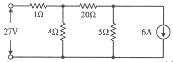
- 14
- 27
- 40
- 80
(정답률: 41%)
24. RC직렬회로에 전류전압 V(V)가 인가되었을 때, 전류i(t)에 대한 전압 방정식(KVL)이
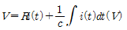
이다. 전류i(t)의 라플라스 변환인 I(s)는? (단, C에는 초기 전하가 없다.)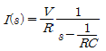
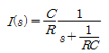
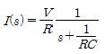
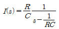
(정답률: 49%)
25. R=4Ω, ωL=3Ω의 직렬회로에
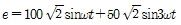
를 인가할 때 이 회로의 소비전력은 약 몇 W인가?- 1000
- 1414
- 1560
- 1703
(정답률: 46%)
26. 선간 전압이 Vab(V)인 3상 평형 전원에 대칭 부하 R(Ω)이 그림과 같이 접속되어 있을 때, a,b 두 상 간에 접속된 전력계의 지시 값이 W(W)라면 C상 전류의 크기(A)는?
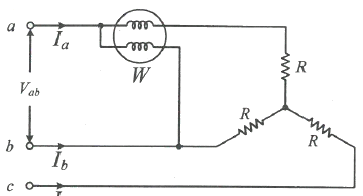
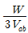
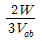
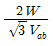
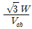
(정답률: 64%)
27. 그림과 같은 T형 4단자 회로망에서 4단자 정수 A와 C는? (단,
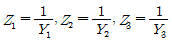
)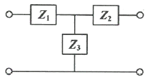
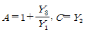
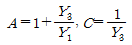
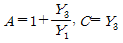
(정답률: 45%)
28. 불평형 3상 전류가 Ia=15+j2(A), Ib=-20-j14(A), Ic=-3+j10(A)일 때, 역상분 전류 I2(A)는?
- 1.91+j6.24
- 15.74-j3.57
- -2.67-j0.67
- -8-j2
(정답률: 34%)
29. t=0에서 스위치(S)를 닫았을 때 t=0+에서의 i(t)는 몇 A인가? (단, 커패시터에 초기 전하는 없다.)
- 0.1
- 0.2
- 0.4
- 1.0
(정답률: 58%)
30. 단위 길이 당 인덕턱스가 L(H/m)이고, 단위 길이 당 정전용량이 C(F/m)인 무손실 선로에서의 진행파 속도(m/s)는?
(정답률: 63%)
31. 다음 회로에서 입력 전압 v1(t)에 대한 출력 전압 v2(t)의 전달함수 G(s)는?
(정답률: 44%)
32. 시간함수 f(f)=sinωt의 z변환은? (단, T는 샘플링 주기이다.)
(정답률: 50%)
33. 적분 시간 4sec, 비례 감도가 4인 비례적분 동작을 하는 제어 요소에 동작신호 z(t)=2t를 주었을 때 이 제어 요소의 조작량은? (단, 조작량의 초기 값은 0이다.)
- t2+8t
- t2+2t
- t2-8t
- t2-2t
(정답률: 58%)
34. 특성방정식의 모든 근이 s평면(복소평면)의 jω축(허수축)에 있을 때 이 제어시스템의 안정도는?
- 알 수 없다.
- 안정하다.
- 분안정하다.
- 임계안정이다.
(정답률: 44%)
35. 그림과 같은 피드백제어 시스템에서 입력이 단위계단함수일 때 정상상태 오차상수인 위치상수 (Kp)는?
(정답률: 36%)
36. Routh-Hurwitz 방법으로 특성방정식이 s4+2s3+s2+4s+2=0인 시스템의 안정도를 관별하면?
- 안정
- 불안정
- 임계안정
- 조건부 안정
(정답률: 49%)
37. 어떤 제어시스템의 개루프 이득이 일 때 이 시스템이 가지는 근궤적의 가지(branch) 수는?
- 1
- 3
- 4
- 5
(정답률: 48%)
38. 다음과 같은 신호흐름선도에서 의 값은?
(정답률: 62%)
39. 제어시스템의 상태방정식이 일 때, 특성방정식을 구하면?
- s2-4s-3=0
- s2-4s+3=0
- s2+4s+3=0
- s2+4s-3=0
(정답률: 34%)
40. 논리식 를 간단히 하면?
- A+B
- A+A·B
(정답률: 63%)
3과목: 신호기기
41. 철도건널목 제어유니트 중 경보시점 제어자용으로 사용되는 것은?
- ST형
- SC형
- DC형
- C형
(정답률: 64%)
42. 유도 전동기의 기동법에서 농형 유도전동기의 기동법이 아닌 것은?
- Y-△기동법
- 리액터 기동법
- 전전압 기동법
- 2차 저항기동법
(정답률: 73%)
43. MJ81형 전기선로전환기에서 기본레일과 팅레일의 밀착간격은 최대 몇 mm 이하로 유지하여야 하는가?
- 4
- 3
- 2
- 1
(정답률: 63%)
44. R-1형 랙을 사용하여 계전기를 설치하고자 한다. 계전기의 수가 325개라면 소요되는 R-1형 랙의 수는?
- 2개
- 4개
- 6개
- 10개
(정답률: 72%)
45. 여자 전류가 끊어진 후 얼마간 시간(시소)이 경과된 후부터 N 접점이 낙하하는 계전기는?
- 유극 3위 계전기
- 무극선조 계전기
- 완동 계전기
- 완방계전기
(정답률: 66%)
46. 부하가 변하면 심하게 속도가 변하는 직류 전동기는?
- 직권전동기
- 분권전동기
- 차동복권전동기
- 가동복권전동기
(정답률: 76%)
47. 다음 중 변압기의 자속을 만드는 전류는?
- 부하전류
- 철손전류
- 자화전류
- 포화전류
(정답률: 76%)
48. 3상 유도전동기에서 동기와트로 표시되는 것은?
- 토크
- 1차 입력
- 2차 출력
- 동기 각속도
(정답률: 58%)
49. 장대형 전동차단기 회로제어기의 정위 및 반위 접점은 100mA의 전류를 통하였을 때, 접점 단자의 전압강하는 몇 mV 이하 이어야 하는가?
- 1
- 3
- 5
- 7
(정답률: 59%)
50. 수은 정류기에서 정류기의 밸브 작용이 상실되는 현상은?
- 역호
- 이상전압
- 실호
- 통호
(정답률: 40%)
51. NS형 선로전환기의 제어계전기는?
- 삽입형 유극 자기유지계전기
- 삽입형 유극 선조계전기
- 삽입형 무극 자기유지계전기
- 삽입형 무극 선조계전기
(정답률: 67%)
52. 건널목경보기의 조정에 관한 사항으로 틀린 것은?
- 경보종의 타종수는 기당 매분 70 ~ 100회
- 경보등의 단자전압은 정격값의 0.8 ~ 0.9배
- 경보등의 점멸회수는 분당 50±10회/분
- 경보기와 제어유니트의 절연저항은 전기회로와 대지간 2MΩ 이상
(정답률: 69%)
53. 건널목 전동차단기의 특성에 관한 내용으로 옳은 것은?(단, 건널목 전동차단기(장대형)은 고려하지 않는다.)
- 슬립 전류는 5A 이하
- 운전 전류는 5.5A 이하
- 기동 전류는 8.5A 이하
- 정격 전압은 12V 이하
(정답률: 65%)
54. 신호기용 변압기(STr)의 단위용량이 잘못 제시된 것은? (단, LED 50V, 12W 기준)
- 신호기 3현시 : 12VA
- 입환신호기 : 12VA
- 신호기 4현시 : 24VA
- 신호기 5현시 : 24VA
(정답률: 49%)
55. 직류궤도회로에 사용되는 한류장치는?
- 코일
- 리액터
- 콘덴서
- 가변저항기
(정답률: 56%)
56. NS형 전기 선로전환기에서 전동기 동작 중 콘덴서 회로가 단선되었다. 단선된 직후의 전동기의 동작 상태는?
- 정지 후 다시 동작한다.
- 회전 방향이 바뀐다.
- 계속 회전한다.
- 전기선로전환기 전환이 정지한다.
(정답률: 73%)
57. 차체 하부의 차량 중심으로부터 진행방향(기관차 정면)에 대하여 좌측으로 몇 mm의 위치에 차상자의 중심이 위치하도록 하여야 하는가?
- 100
- 200
- 300
- 400
(정답률: 40%)
58. 직류전동기의 제동법 중 전동기를 발전기로 동작시켜 회전부가 갖는 기계적 에너지를 전기적 에너지로 변환하여 열로 소비하는 제동방식은?
- 발전제동
- 회생제동
- 저항제동
- 맴돌이 전류제동
(정답률: 60%)
59. 단상 변압기를 병렬 운전하는 할 때, 부하 전류의 분담에 관한 설명으로 옳은 것은?
- 누설 임피던스에 비례한다.
- 정격 용량에 반비례한다.
- %임피던스강하에 반비례한다.
- %임피던스강하에 비례한다.
(정답률: 67%)
60. 60Hz, 6극, 3상 유도전동기의 슬립이 4%일 때의 회전수(rpm)는?
- 1152
- 1178
- 1200
- 1218
(정답률: 60%)
4과목: 신호공학
61. 차상 선로전환기가 배향측으로 개통되어 있을 때 표시등의 상태는?
- 적색등 점등
- 청색등 점등
- 적색등 점멸
- 등황색등 점등
(정답률: 58%)
62. 경부고속철도에 설치된 기상검지장치가 아닌 것은?
- 안개검지장치
- 풍속 ㆍ 풍향검지장치
- 적설량검지장치
- 강우량검지장치
(정답률: 67%)
63. 출발신호기와 입환신호기를 소정의 위치에 설비할 수 없는 경우 열차 및 차량 정지표지에서 출발 신호기와 입환신호기까지의 궤도회로내에 열차가 점유하고 있을 때 취급버튼을 정위로 쇄정하는 것을 무슨 쇄정 이라 하는가?
- 폐로쇄정
- 철사쇄정
- 시간쇄정
- 접근쇄정
(정답률: 40%)
64. 강설, 결빙 등의 원인으로 인한 선로전환기 전환불능 및 불량장애를 미연에 방지하기 위한 설비는?
- 강우 검지장치
- 적설 검지장치
- 분기기 히팅장치
- 풍속 검지장치
(정답률: 75%)
65. 3현시 자동폐색 구간에서 열차의 길이 L(m), 신호현시 최소 확인거리 C(m), 제동거리 b(m), 안전제동 여유거리k(m), 열차속도 V(km/h)일 때의 최소 운전 시격을 나타내는 계산식은? (단, t는 선행열차가 1의 신호기를 통과할 때부터 3의 신호기가 진행신호를 현시 할 때까지의 시간(sec)이다.)
(정답률: 65%)
66. 건널목경보기 2440형의 발진주파수 범위는?
- 20kHz±2kHz 이내
- 30kHz±2kHz 이내
- 40kHz±2kHz 이내
- 50kHz±2kHz 이내
(정답률: 66%)
67. 신호기를 평지에 건식하고자 한다. 신호기주의 안전율은 몇 이상이어야 하는가?
- 1
- 2
- 3
- 4
(정답률: 65%)
68. 진로선별식 전기연동장치에서 신호제어회로의 구비조건으로 틀린 것은?
- TR의 여자 접점
- ASR의 무여자 접점
- TLSR의 여자 접점
- WLR의 무여자 접점
(정답률: 55%)
69. 신호제어설비의 안전측 동작 원칙에 해당하지 않는 것은?
- 계전기는 무여자시 전원을 차단하는 방식
- 전원과 계전기의 위치를 양단으로 하는 방식
- 궤도회로는 폐전로식
- 계전기 회로는 여자시 기기를 쇄정하는 방식
(정답률: 55%)
70. 3위식 신호기의 5현시 방법으로 옳은 것은?
- R, RY, Y, YG, G
- R, YY, Y, YG, G
- R, YY, Y, RG, G
- R, WY, Y, WG, G
(정답률: 78%)
71. 궤도회로의 점퍼선(jumper wire)에 대한 설명으로 틀린 것은?
- 동일극성의 다른 레일 상호간을 접속시키는 전선이다.
- 병렬법은 궤도회로의 레일길이가 짧은 장점이 있다.
- 병렬법이 안전도가 가장 높다.
- 점퍼선을 설치하는 방법에 따라 직렬법, 병렬법, 직ㆍ병렬법이 있다.
(정답률: 61%)
72. 경부고속철도 레일온도검지장치(RTCP)의 온도별 운전취급방법으로 거리가 먼 것은?
- 레일온도가 65℃이상일 때 : 운행중지
- 레일온도가 60℃이상 64℃미만일 때 : 70km/h 이하운전
- 레일온도가 55℃이상 60℃미만일 때 : 230km/h 이하운전
- 레일온도가 50℃이상 55℃미만일 때 : 270km/h 이하운전
(정답률: 65%)
73. 궤도회로의 한류장치에 대한 설명으로 틀린 것은?
- 직류 궤도 회로에서는 전원장치에 과전류가 흐르는 것을 제한한다.
- 직류 궤도 회로에서는 궤도 증폭기를 사용한다.
- 교류 궤도 회로에서는 저항 또는 리액터가 사용된다.
- 교류 궤도 회로에서는 2원형 궤도 계전기의 회전 역률의 위상을 조정해 준다.
(정답률: 48%)
74. 고전압 임펄스 궤도회로의 송신부 주파수는?(단, 주파수 오차는 고려하지 않는다.)
- 1Hz
- 2Hz
- 3Hz
- 4Hz
(정답률: 55%)
75. 양쪽 방향으로 정보의 전송이 가능하지만 어떤 순간에는 정보의 전송이 한쪽 방향으로만 가능한 통신 방식은?
- 반이중 방식
- 전이중 방식
- 직렬전송 방식
- 병렬전송 방식
(정답률: 72%)
76. 건널목 지장물검지장치의 설명으로 옳은 것은?
- 발광기와 수광기간의 거리는 50m이하로 한다.
- 발광기의 빔 확산 각도는 5°이하로 한다.
- 광선중심축 지상높이는 건널목 도로면에서 745mm를 표준으로 한다.
- 발광기와 수광기는 건널목 종단에서 3m 이내에 설치한다.
(정답률: 62%)
77. 연속제어식 ATS-S S-2형의 지상자와 차상자의 공진주파수를 구하는 식은?
(정답률: 75%)
78. CTC 장치의 중 기능으로 볼 수 없는 것은?
- 정속도 운행 자동 제어
- 신호설비의 감시 제어
- 열차 진로의 자동 제어
- 열차 운행 상황 표시
(정답률: 65%)
79. 폐색구간의 경계에 설치하는 신호기로 옳은 것은?
- 자동폐색구간의 경계에는 출발신호기
- 자동폐색구간의 경계에는 입환신호기
- 연동폐색구간의 경계에는 입환신호기
- 연동폐색구간의 경계에는 폐색신호기
(정답률: 45%)
80. 열차집중제어장치(CTC)의 주요 구성기기가 아닌 것은?
- 주 컴퓨터
- 데이터 전송설비(DTS)
- 대형표시반(LDP)
- 발리스(Balise)
(정답률: 69%)